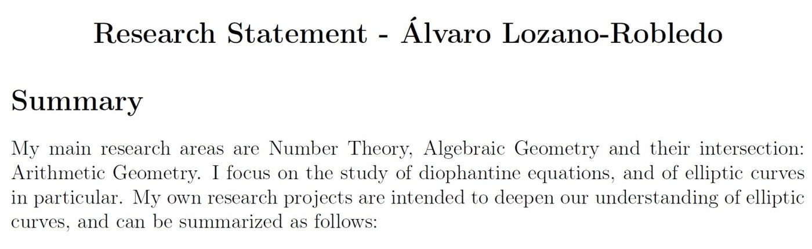
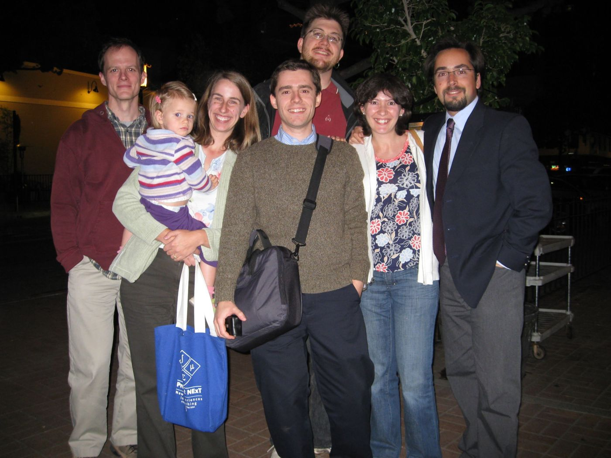
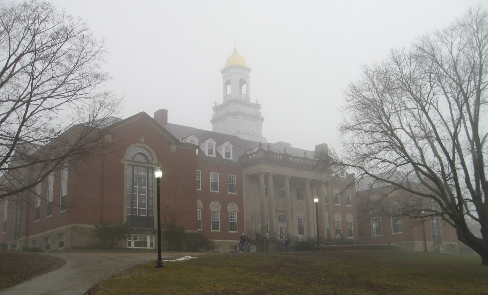

In my previous posts, I described my first job search during the last year of my PhD at BU, and then my second search while I was a visiting professor at Colby College for a year. In this post, I describe my “final boss fight” in search of a tenure-track position in mathematics. In fact, just like my favorite heroes in the Geonosis arena, there were three final bosses awaiting me at the end of the road, with three corresponding tenure-track interviews (each one of them with an unexpected twist), which I’ll try my best to summarize in this post.
After my one year at Colby College, I traveled from Waterville, ME, to Ithaca, NY, to work as a postdoc at Cornell University for three years. The job was all that a mathematician can dream of a postdoc but the next stages of my life and career were always on my mind, so (like many postdocs are advised to do) I applied to a few jobs during year 2 of my postdoc to maximize my chances of landing the wildly desired tenure-track job of my dreams. My records say I applied to 7 jobs. Unfortunately, I did not hear back from any of those institutions that I applied to. The search was as uneventful as it was unsuccessful. Nonetheless, just like any other search, it was nerve-wracking, but nothing came out of it, so let us never mention it again.
Flash forward to year 3 of my postdoc, and the stakes had never been higher. The goal of Job Search Round #3 (ehem… #4) was to find a tenure-track position, so that I would not have to go through any further searches (hopefully for a while). The trick, though, was that this time my search was rather limited in geographical terms. When I first started looking for jobs while at BU, my wife and I made a deal: she would move with me wherever my postdoc took me, for three years (which actually ended up being 4 years total), and then we would move back to New England, as close to the Boston area as possible. After the failed search on postdoc year 2 (remember? the one I said I would not mention again?), all the eggs were in the one basket of my search on year 3. The pressure was on to find a tenure-track job in New England. The fact that I did not hear back at all from any of the schools I applied to during my second year at Cornell did not bode well.

Let the search begin! As a first step, once again I updated all my materials (CV, research and teaching statement), and assembled my poker hand of letter writers: Berger, Gouvêa, Ramakrishna, Rohrlich, and Stevens. (My heartfelt thanks to all my letter writers over the years!)
And then the daily search for jobs began. As in previous years, I mined every tool at my disposal to find all the openings at schools in the New England area, within a 3-hour drive from Boston. My records show that I applied to 15 jobs that year… which was a scarily low number, given the large number of jobs I had applied to during previous (successful) searches.
The applications started to go out sometime in October, and then the long dreadful wait started.
Luckily, I had some good news early on. By late December, I had heard from three institutions: UConn, and two small colleges in New England, which will remain anonymous for reasons that will become clear later on. All three, as a first step, wanted to set up interviews with me at the Joint Math Meetings that would take place in San Diego, January 2008, so I packed my bags, and to San Diego we went folks!
Interlude: A Rant about the Joint Math Meetings
I do not like the JMM for one particular reason: the job market. There are so many interviews happening on any given day during the JMM, that they rarify the air with the fear and fried nerves of the candidates, to the point that the environment becomes toxic. I love going to conferences, but the JMM has a weirdly tense vibe that is generated by the job interviews. Of course, if you are on the job market, you have to be there to contribute your own bit of dreadfulness to the convention center. There is no way around it.
There is one positive aspect about the JMM that everyone loves: you get together with other mathematician friends that you have not seen in a long time.

Small Colleges #1 and #2
Let me first say what the interview process was like with the two small colleges, before we go on to the tenure-track hiring process with UConn.
Small Colleges #1 and #2 set up short interviews with me at the Joint Meetings. The first interview with College #1 went well. The committee was nice and we had a nice, laid-back chat. I was nervous before the interview, but I was able to quickly relax once the interview started, and I thought I made an overall good impression, with nice answers to all of their questions about research and teaching. This interview took place somewhere indoors in the San Diego Convention Center, but not at the official AMS employment center.
The interview with College #2 did happen at the official AMS employment center. I arrived early, and was waiting for my turn to interview with College #2 when I saw the chair of the committee for College #1 walk into the employment center, and sit at a table, with some other institution (let’s call it College #3). While I was curiously spying on him, Chair of Comm. #1 chatted amicably with the committee from College #3 for a while, and then he left. He noticed me on his way out, and I smiled, but Chair of Comm. #1 turned livid and ran out of the employment center in a hurry, barely acknowledging my presence. Weird. Maybe I had not made such a good impression after all? Only much later I learned that Chair of Comm. #1 was actually interviewing for a position at College #3, where he would eventually be hired later that same job season.
At any rate, after the Chair of Comm. #1 left, I was called to the table of College #2. The interview was isomorphic to the interview with College #1, so it went reasonably well. I had a nice impression from the committee and I thought, I hoped, I made a good impression myself.
Soon after I returned from San Diego, I received the good news that both College #1 and #2 were inviting me to on-campus interviews… in the same week of February.
Alea iacta est.
On-Campus Interview #1
College #1 was a small private college in Massachusetts, and the interview was on Monday of what will be forever known as Helluvaweek 2008. The day-long interview started bright and early at 8am, with a brief chat with the chair of the search committee, the mathematician who as we now know was in the market to go elsewhere, while trying to convince me that College #1 was a great place to work at. By 8:30am I was being grilled by math faculty. By 9am I was being interrogated by the Provost, and by 10am I was being interviewed by the Dean. Lunch is never a break for the candidate during a job interview: in this case undergrads who were part of the search committee took me out to lunch to the student union, and asked me a few relevant questions. After lunch, the chair of the committee gave me a tour of the campus, and after the tour, I gave a 50 minute talk on the congruent number problem (aimed at undergrads). After my talk, a few faculty members took me out to dinner, and the day was over.
The chair of the committee did land the job and moved to College #3, and the funny thing is that College #3 eventually called me to see if I was available as well, because they were hiring two people (they called me, though, after I had already verbally accepted the UConn job). It would have been hilarious if he and I ended up working at College #3.
By the way, I never heard from College #1 after my interview. I thought it went really well, but I did not get the job.
On-Campus Interview #3
College #1 interviewed me on Monday of Helluvaweek 2008, and College #2 interviewed me on Thursday of the same lovely February week.
College #2 was a small liberal arts college in New Hampshire. The Chair (and chair of the search committee) was very laid-back, which is typically a nice quality, but so laid-back that the details of my day were very scarce and reaching him was hard even by phone. The day before the interview was supposed to take place, I had to call several times to get an exact location of when and where to meet in the morning. About the interview itself, essentially, all I was told is that I was to give a short (30 minutes) presentation to an audience of undergrads during their number theory class.
After receiving a few more details about my day when I arrived on campus in the morning, the day went well, with the typical packed schedule of meetings with faculty, Dean, and students. I gave my 30 minute version of my job talk aimed at undergrads (again, on the congruent number problem), and we finished the day with an early dinner, before I started to drive back to Ithaca.
I was happy with the interview, and I thought I made a good impression.
A day later, I received an email from the Chair of College #2, saying that there was a problem:
“We liked your talk so much that we wanted to know more about the congruent number problem. In a quick google search the second site to show is [some site about the congruent number problem that no longer exists]. Your talk followed this one very closely, yet you did not give attribution. We would not accept this from a student, so do not see how we can from a faculty member.”
The absurdity of this message still dumbfounds me to this day. The congruent number problem has been studied for over a thousand years, and, of course, there are pages and pages written and published about this particular problem. There have been also very many talks on the subject over the years, just like there are so many talks about Fermat’s last theorem. And if you ask a number theorist to put together a 30 minute talk for undergrads about the congruent number problem, you will find that most of us would put together very, very similar talks (what is the problem, some examples, the connection to elliptic curves, Zagier’s example for n=157, Tunnell’s criterion, etc.). But this was not a typical talk, and much of what was in my talk was not in the website he found, or any other reference, so the accusation was not even true. In my talk I discuss the life and work of Leonardo Pisano (aka Fibonacci), and how the court of Holy Roman Emperor Frederick II challenged Fibonacci to solve the congruent number problem for n=5. None of this was in the crappy website that the Chair found, but the website did have the basics about the congruent number problem (e.g., Zagier’s example), which I did cover.
But never mind all that. I had 30 minutes to give a presentation to undergrads within the setting of a course in number theory, and it is highly unusual to give a list of references of all materials consulted to give a talk, much less a lecture in a class. Of course, if I had been asked to provide references, I would have compiled a complete bibliography for his students (for instance, Koblitz’s “Introduction to Elliptic Curves and Modular Forms” uses the congruent number problem as a motivating example).
I asked and explained the situation to multiple people, at Cornell, at BU, and all agreed that this was a truly strange, incomprehensible behavior by the Chair of College #2. As it turns out, I know the PhD advisor of the Chair of College #2, and he also agreed that some cables must have been crossed in the chair’s head for such a ridiculous response and accusation.
Needless to say, I did not get the job at College #2, nor would I have wanted to touch that job with a ten foot pole.
The UConn Interviews
Let us backtrack to the Joint Meetings in San Diego, where I had my first brief interview with a UConn colleague.
During your mathematical “upbringing” you meet lots of people, and you do lots of things, and it is not clear what connections, if any, might be useful later. Nonetheless, I strongly encourage students and postdocs to cultivate all these relations and connections, because you never know what might end up being of importance later in your career.
A few serendipitous connections made me an ideal candidate for the UConn job. My research lined up quite well with the (very broad) interests of Keith Conrad, who already worked at UConn during my job interviews, and I had met Keith a few times at BU, and also we had invited him to Cornell at least once to give a talk. On the other hand, UConn was looking for a person with a strong educational background who would be hired as associate director of their Quantitative Learning Center (a large tutoring center that offers help in math classes but also in Chem, Physics, and Stats). As it turns out, I had a few very relevant and unusual qualifications for that part of the job: I had worked for the PROMYS Program for Teachers for 4 summers while at BU, and I ran the “Calculus Afterhours” tutoring program during my year at Colby. So, naturally, I was interviewed for the job at UConn.
My friend and colleague Tom Roby, who was the Q Center Director, set up an interview with me in the back side of the Convention Center, at a lovely outdoor area.
Tom is a really friendly, congenial person, so the interview immediately became a really interesting conversation, and we were soon having a great time, enjoying the beautiful San Diego weather. Many other mathematicians were also chatting at nearby tables, and I was glad to be outside, and as far away as possible from the dreadful AMS employment center.
Tom asked me typical interview questions, but both of us enjoyed following whatever tangents came up in conversation. I remember that I was trying to concentrate on one of his tangents, but something else was distracting me. Behind Tom, sitting at a ledge, a mathematician I didn’t know was acting strangely. She first seemed sleepy, then disoriented, and all of a sudden, she collapsed. With a loud thump, she fell face first on the concrete floor. I immediately stood up, ran past Tom, and approached the woman on the floor. “Are you ok??” No response. I tried to turn her around and saw that she was starting to convulse. Tom and several others stood around us in shock. Fumbling through my pockets, I pulled my phone out, and started dialing 911. Then I looked up to see the small crowd of mathematicians who were just there, looking at us in disbelief, and I yelled at Tom and everyone else “DON’T JUST STAND THERE! GO GET A SECURITY AGENT FROM INSIDE!!” and Tom, and someone else took off, running indoors to get some help.
The 911 dispatcher asked for some basic information and assured me that help was on the way… but I had to make sure that the woman on the floor was not biting her tongue. I helped her turn around, and I was glad to see that she did not seem to be biting her tongue, though a fair amount of foam was coming out of the mouth, which was surely not a good sign. The dispatcher asked me to put something between her teeth. The only thing I could find was her purse, so I forced the strap of her purse between the teeth. The dispatcher now asked me to stay on the line, and narrate any other developments, until help arrived. The woman on the floor started to wake up, and after a few seconds she realized what had happened. I tried to assure her she was ok, and that help was on the way. She told me that, unfortunately, it was not her first seizure. Her face was scraped and bruised, but she was starting to feel better. I was glad she fell towards the concrete floor, and not towards the other side of the ledge where there was easily a 20-foot drop.
Tom came back with some security officer, and the paramedics were there shortly after. They helped her into an ambulance, and they whisked her away to a hospital.
Tom and I sat back down, still rattled. And then I realized I literally screamed at my interviewer and ordered him to go get help. I apologized, and he laughed it off, just complimenting me on my quick thinking and composure in an emergency situation. “You passed the test,” he joked. The truth is that I am no stranger to passing out unexpectedly, so I only did what other strangers have done for me on multiple occasions.
Though my interview with Tom went well, I did not know if the commotion and screaming might have screwed up my chances. However, I did get a message from the Chair at UConn Math that I was invited to an on-campus interview on Wednesday of, you guessed it, Helluvaweek 2008.
PS: While I was waiting for the paramedics to arrive, I was able to have a look at the name tag of the fellow mathematician on the floor. So a few days later, I wrote an email message to her to see how she was doing. She was very grateful for my help, and I was very glad to hear she was bruised but fine. She was happy to hear that I got an on-campus interview despite all the chaos during my JMM interview.

The UConn on-campus interview was exhausting (I had to give two 1-hour talks, one for students, one colloquium for faculty) but fair. Just like after the other two interviews, I left with a good impression, and I thought the day went well… but hey, what do I know given the results of the interviews with Colleges #1 and #2.
In mid February, the Chair at UConn called me with excellent news: a tenure-track offer. I was elated, and I am still so happy that I was hired at UConn and that I get to work at such a great place.